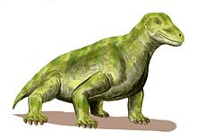

La diversidad de los mamíferos es fruto de los rápidos procesos evolutivos a los que se han visto sometidos estos animales en su camino hacia la conquista del planeta, habiendo demostrado una extraordinaria capacidad de adaptación que les ha permitido distribuirse por la gran mayoría de los ambientes.

Los mecanismos desarrollados por cada especie para conseguir adaptarse
al medio evolucionaron de forma independiente. Así, mientras que
algunas especies como el oso polar (Ursus maritimus) se protegieron del
frío con una densa capa de pelo que con el reflejo de luz se ve
blanco, otros como los pinnípedos o los cetáceos lo
hicieron produciendo una densa capa de tejido graso bajo la piel.